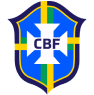
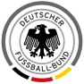
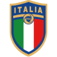
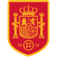

Seleções Campeãs
Ao todo, oito nações diferentes venceram uma Copa do Mundo: três sul-americanas (em posse de 9 títulos) e cinco europeias (totalizando 12 títulos). A primeira seleção a ganhar duas Copas foi a Itália. O primeiro tri, tetra e penta é do Brasil. As nações que já venceram edições de Copa do Mundo foram: Brasil: 5 títulos (1958, 1962, 1970, 1994 e 2002); Alemanha: 4 títulos (1954, 1974, 1990 e 2014); Itália: 4 títulos (1934, 1938, 1982 e 2006); França: 2 títulos (1998 e 2018) Argentina: 2 títulos (1978 e 1986); Uruguai: 2 títulos (1930 e 1950); Espanha: 1 título (2010) e Inglaterra: 1 título (1966).

Brasil
5

Alemanha
4

Itália
4Argentina
2França
2
Uruguai
2Inglaterra
1
